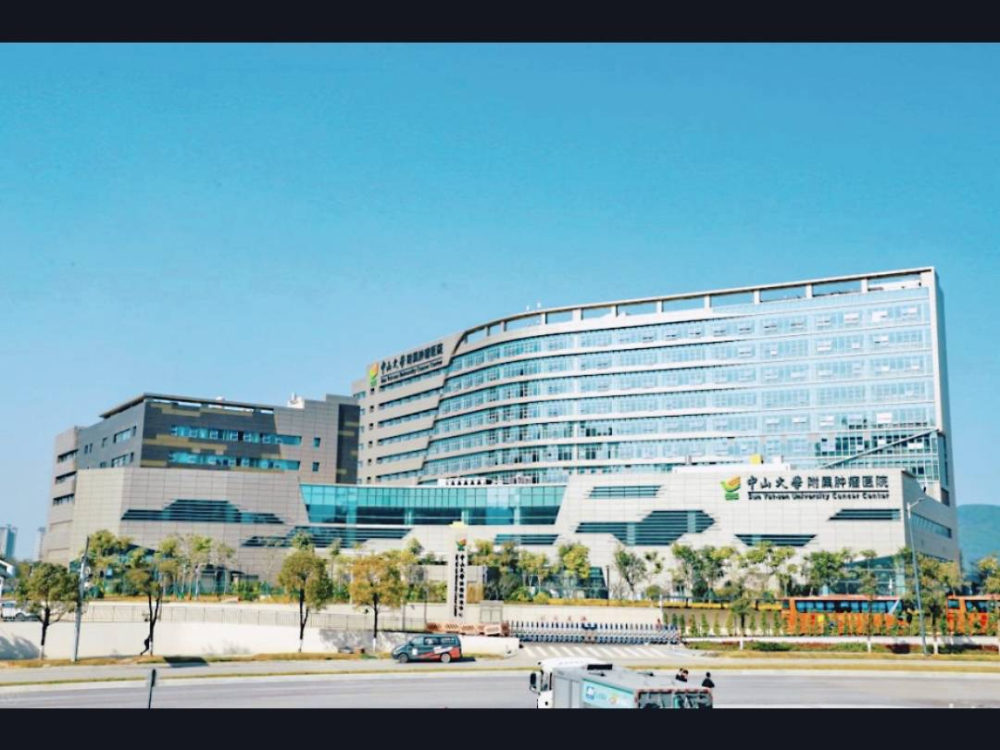

Quick Cost Comparison — Guangzhou vs US
What's in This Guide
- Why International Patients Choose Guangzhou
- Sun Yat-sen University Cancer Center — Southern China's Top Cancer Hospital
- First Affiliated Hospital of Sun Yat-sen University
- Other Top Hospitals in Guangzhou
- Guangzhou Hospital Specialties
- Real Cost Breakdown
- How to Book as a Foreigner
- Frequently Asked Questions
Why International Patients Choose Guangzhou
Guangzhou is southern China's largest city and its most important medical hub, drawing patients from across Guangdong province, Hong Kong, Macau, Southeast Asia, and beyond. The city is home to several of China's most distinguished medical institutions, with particular national leadership in oncology, liver disease, and cardiovascular medicine.
For international patients, Guangzhou occupies a distinctive position: it is one of China's most accessible large cities (with direct international flights and a well-developed international business infrastructure), and its hospitals serve a large and wealthy catchment area that generates substantial clinical experience. Guangzhou's geographic position also makes it a natural destination for patients from Hong Kong, Macau, Southeast Asia, and Australia — who often find Guangzhou's language environment and cultural context more familiar than Beijing or Shanghai.
Sun Yat-sen University Cancer Center (中山大学肿瘤防治中心) is the standout — one of China's four premier cancer hospitals and globally recognized for nasopharyngeal cancer (NPC), a cancer with particularly high incidence in southern China and Southeast Asia. Patients from across Asia come to SYSUCC specifically for NPC treatment, which is widely considered among the best in the world. The First Affiliated Hospital of Sun Yat-sen University (中山大学附属第一医院) is Guangzhou's most comprehensive academic hospital and one of China's top-10 national hospitals.
Sun Yat-sen University Cancer Center — Southern China's Top Cancer Hospital
Sun Yat-sen University Cancer Center / SYSUCC (中山大学肿瘤防治中心)

SYSUCC is one of China's most distinguished cancer hospitals and an internationally recognized leader in several cancer types. The hospital was founded in 1964 and has grown into a comprehensive cancer center with over 2,000 beds, handling more than 10,000 new cancer cases annually. It is globally renowned for:
- Nasopharyngeal Cancer (NPC): SYSUCC's NPC treatment protocols are considered among the best globally. The hospital has the largest single-center experience with NPC in the world — its radiation oncology team has treated more NPC patients than any other institution. Their outcomes data for locally advanced NPC (treated with intensity-modulated radiation therapy combined with chemotherapy) is published in major international journals. Patients from Hong Kong, Malaysia, Singapore, Indonesia, and Australia come specifically for NPC treatment at SYSUCC.
- Lung Cancer: Strong across surgical oncology, medical oncology (including targeted therapy and immunotherapy), and radiation therapy. Active clinical trial program with new targeted therapies and immunotherapies. One of the highest-volume lung cancer centers in Asia.
- Gastrointestinal Cancers: Particularly strong in colorectal cancer, gastric cancer, and esophageal cancer. Multidisciplinary tumor board reviews complex GI cancer cases weekly.
- Lymphoma: The lymphoma department is nationally recognized, with particular strength in NK/T-cell lymphoma (another cancer with high incidence in Asia) and aggressive B-cell lymphomas.
International services: SYSUCC has a dedicated overseas patient office with coordinators who speak English, Indonesian, Malay, and other languages. The hospital is experienced with international patients and has streamlined processes for medical record review, treatment planning, and cost estimation for overseas patients. Accepts some international insurance plans — confirm direct billing in advance.
Address: No. 651 Dongfeng East Road, Yuexiu District, Guangzhou (越秀区东风东路651号). Metro Line 5 (Yangji Station, Exit I).
First Affiliated Hospital of Sun Yat-sen University
First Affiliated Hospital of Sun Yat-sen University (中山大学附属第一医院)
The First Affiliated Hospital is Guangzhou's largest and most comprehensive medical institution — a true general hospital with the breadth and depth to handle any medical condition, and particular strength in neurology, cardiovascular medicine, critical care (ICU), and multi-specialty coordination for complex cases. It is ranked among China's top 10 hospitals nationally and handles the most complex referral cases from across Guangdong province.
- Neurology: Nationally leading department for stroke management, epilepsy, neurodegenerative diseases (Alzheimer's, Parkinson's), and rare neurological conditions. Has one of the most active stroke intervention programs in southern China.
- Cardiovascular Medicine: High-volume cardiac catheterization center (angioplasty, stenting), cardiac surgery program, and electrophysiology (arrhythmia ablation). Strong outcomes data in complex coronary interventions.
- Critical Care / ICU: One of the most experienced ICU teams in southern China — important for patients with serious, multi-organ, or unstable conditions requiring intensive monitoring.
- Kidney Disease / Dialysis: Strong nephrology department with active kidney transplant program and comprehensive dialysis services.
International services: Has a VIP international ward with English-speaking coordinators and dedicated patient liaison staff. More accessible for international patients than SYSUCC for non-cancer conditions, with an established international patient process.
Address: No. 58 Zhongshan Second Road, Yuexiu District, Guangzhou (越秀区中山二路58号). Metro Line 1 and 5 (Zhongshanwu Road Station).
Other Top Hospitals in Guangzhou
Guangzhou Women and Children's Medical Center (广州市妇女儿童医疗中心)
Guangzhou's leading women's and children's hospital — handles everything from routine obstetrics and pediatrics to the most complex pediatric cardiac surgery, neonatal intensive care, and pediatric oncology. Particularly strong in pediatric cardiac surgery (including complex congenital heart defects), pediatric internal medicine, and maternal-fetal medicine. Draws patients from across Guangdong province and southern China.
Address: No. 9 Jinsui Road, Tianhe District, Guangzhou.
Guangzhou United Family Hospital (广州和睦家医院)
Part of China's premier international private hospital network — fully JCI-accredited, English-speaking throughout, and providing care to international standards. Costs are 3-5x higher than public hospitals but significantly below Western equivalents. Good choice for patients who prioritize communication and Western-style care, or those with international health insurance that covers private hospitals. Handles primary care, specialty referrals, maternity care, and pediatrics.
Address: No. 70 Siyou Nan Road, Yuexiu District, Guangzhou.
Guangdong Provincial People's Hospital (广东省人民医院)
A large general academic hospital and one of Guangdong province's flagship medical institutions. Particularly known for cardiology and cardiac surgery, neurology, and kidney disease. Its cardiac center performs a high volume of complex cardiac procedures annually, and the hospital is experienced with international patients through its VIP ward. More accessible for international patients than the flagship SYSUCC or First Affiliated Hospital, with shorter typical wait times.
Address: No. 123 Yuehua Road, Yuexiu District, Guangzhou.
Sun Yat-sen University Third Affiliated Hospital (中山大学附属第三医院)
Particularly renowned for hepatology and liver disease — one of China's leading centers for hepatitis B management, liver cirrhosis care, and liver transplantation. Also notable for its immunology and rheumatology department, which handles complex autoimmune conditions including lupus, rheumatoid arthritis, and rare immune-mediated diseases. Less overwhelmed than the First Affiliated Hospital, making it more accessible for international patients.
Address: No. 600 Tianhe Road, Tianhe District, Guangzhou.
Guangzhou Hospital Specialties
| Specialty | Top Hospital in Guangzhou | Guangzhou Cost (USD) | US Equivalent Cost |
|---|---|---|---|
| Nasopharyngeal Cancer (Radiation + Chemo) | SYSUCC | $8,000–$14,000 | $60,000–$120,000 |
| Lung Cancer (Surgery + Adjuvant Therapy) | SYSUCC, Guangdong Provincial People's | $10,000–$22,000 | $80,000–$200,000 |
| Liver Transplant | Third Affiliated Hospital SYSU | $50,000–$75,000 | $400,000–$800,000 |
| Cardiac Bypass / Valve | Guangdong Provincial People's, First Affiliated | $10,000–$15,000 | $80,000–$120,000 |
| Stroke Intervention | First Affiliated Hospital SYSU | $8,000–$18,000 | $50,000–$100,000 |
| Kidney Transplant | First Affiliated Hospital SYSU | $30,000–$45,000 | $300,000–$500,000 |
| Pediatric Cardiac Surgery | Guangzhou Women and Children's | $12,000–$28,000 | $100,000–$300,000 |
| Gastrointestinal Cancer Surgery | SYSUCC, First Affiliated | $8,000–$16,000 | $60,000–$150,000 |
What a Real Patient Journey Looks Like
Rajesh, 41, from Malaysia — nasopharyngeal cancer treatment at SYSUCC:
"I was diagnosed with stage III nasopharyngeal cancer in Kuala Lumpur. My oncologist recommended radiation and chemotherapy, but the cost of treatment in Malaysia — even with insurance — was going to be significant, and the waiting time was over a month.
A friend who had been treated at SYSUCC for the same condition recommended I contact them. I sent my biopsy report and MRI scans by email to their overseas patient office. They responded within four days with a proposed treatment plan and a written cost estimate of $11,200 USD for the full course of IMRT radiation plus chemotherapy.
I flew to Guangzhou, had my planning CT scan and simulation, and started treatment within a week. The radiation oncology team at SYSUCC — led by Professor [Name] — had treated thousands of NPC cases. I completed 33 sessions of radiation and 3 cycles of chemotherapy over about two months. The side effects were managed with medication they provided. I stayed in a serviced apartment near the hospital.
Total cost including treatment, accommodation, and flights was approximately $18,000 USD. In Malaysia, the same treatment would have cost approximately MYR 120,000 (about $27,000 USD) with a longer wait."
How to Book as a Foreigner
Option 1: Through the Hospital's Overseas Patient Office (Recommended)
SYSUCC and the First Affiliated Hospital both have dedicated overseas patient offices that handle international inquiries. Submit your medical records (in English or with translation), describe your condition, and they will coordinate specialist appointments and provide cost estimates. SYSUCC's office is particularly well-developed and handles patients from Southeast Asia, Hong Kong, and beyond. Response times typically 2-7 business days.
SYSUCC Overseas Patient Office: Email: sysucc@sysucc.org.cn | Phone: +86-20-8734-3399
First Affiliated Hospital SYSU International Ward: Phone: +86-20-8775-5766
Option 2: Through Our Free Case Review Service
We work directly with international coordinators at Guangzhou's top hospitals. Send us your diagnosis and medical reports — we'll identify the most appropriate specialists, get you written cost estimates, and handle appointment logistics within 24-48 hours.
Option 3: In Person
For patients already in Guangzhou, visit the overseas patient office or international ward of your chosen hospital with your passport and medical records. Bring CT/MRI scans on disc if available. Offices are typically open Monday-Friday, 8am-5pm.
We connect international patients with the right specialists at Guangzhou's top hospitals — for free.
Get a Free Hospital Assessment →
Frequently Asked Questions
Does Sun Yat-sen University Cancer Center accept foreign patients?
Yes. SYSUCC has extensive experience with international patients and a dedicated overseas patient office with English-speaking coordinators. The hospital is particularly accustomed to patients from Hong Kong, Macau, Malaysia, Singapore, Indonesia, and Australia — as well as patients from further afield who have traveled specifically for NPC and other cancer treatment. SYSUCC's NPC treatment outcomes are among the best globally.
What is the best hospital in Guangzhou for nasopharyngeal cancer?
SYSUCC is quite simply the world leader in nasopharyngeal cancer treatment. The hospital has treated more NPC cases than any other institution globally and its treatment protocols — particularly for locally advanced NPC — are referenced internationally. If you or someone you know has been diagnosed with NPC, SYSUCC should be on your list of institutions to consider, regardless of where you are planning to be treated.
How do Guangzhou hospital costs compare to the US?
Cancer treatment at Guangzhou's top hospitals typically costs 60-85% less than equivalent treatment in the US. A full course of radiation therapy for NPC at SYSUCC costs approximately $8,000–$14,000 USD versus $60,000–$120,000 in the US. Liver transplantation at SYSUCC's partner hospital runs $50,000–$75,000 versus $400,000–$800,000 in the US. Even including flights and accommodation, the total is significantly cheaper.
Is there English-speaking staff at Guangzhou hospitals?
Yes, particularly at SYSUCC's overseas patient office (which also has Indonesian and Malay-speaking coordinators), the First Affiliated Hospital's VIP international ward, and throughout Guangzhou United Family Hospital (which is fully English-staffed). Guangzhou United Family is often the first point of contact for expats living in Guangzhou who need English-language primary care.
How do I get from Guangzhou airport to SYSUCC?
Guangzhou Baiyun International Airport (CAN) is about 35km from central Guangzhou. Options: pre-arranged hospital transfer (most convenient), taxi (approximately ¥120-150, 40-60 minutes), or Metro Line 3 to Guangzhou East Station, then Line 1 to Yangji Station (approximately 60 minutes, ¥8).